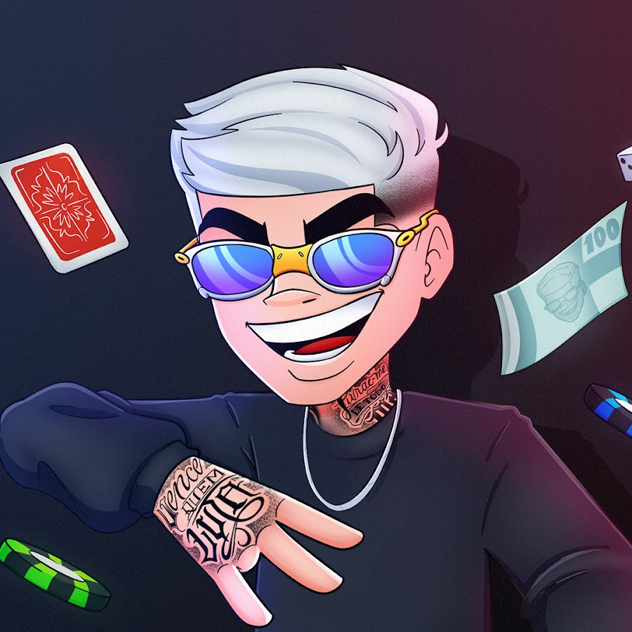

Streamer, Criador de Conteúdo e Ex-Jogador de e-Sports

Yuri Vinicius Brida nasceu em 24 de maio de 2001 na cidade de Itapira, São Paulo. Durante a adolescência ele jogava futebol de campo, mas decidiu focar nos jogos eletrônicos. No ano de 2019, ele reuniu suas economias e escolheu comprar seu primeiro computador gamer para começar a treinar e criar conteúdo.
Ficou muito conhecido no jogo Free Fire e se destacou como capitão da equipe da Los Grandes, conquistando a Copa Nobru. Depois passou a fazer lives de jogos e entretenimento todos os dias, tornando-se muito popular por seus bordões como "GOTI!" e acumulando milhões de seguidores.
Acompanhe as lives e vídeos nos canais oficiais:
Atividade de Linguagem de Marcação - SENAI